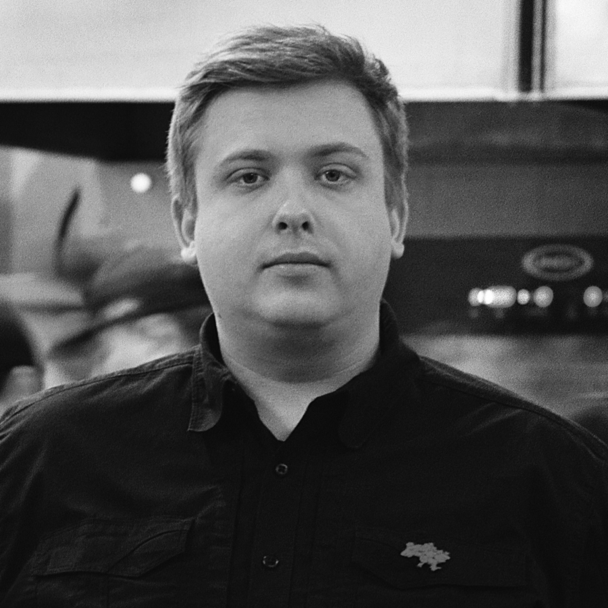
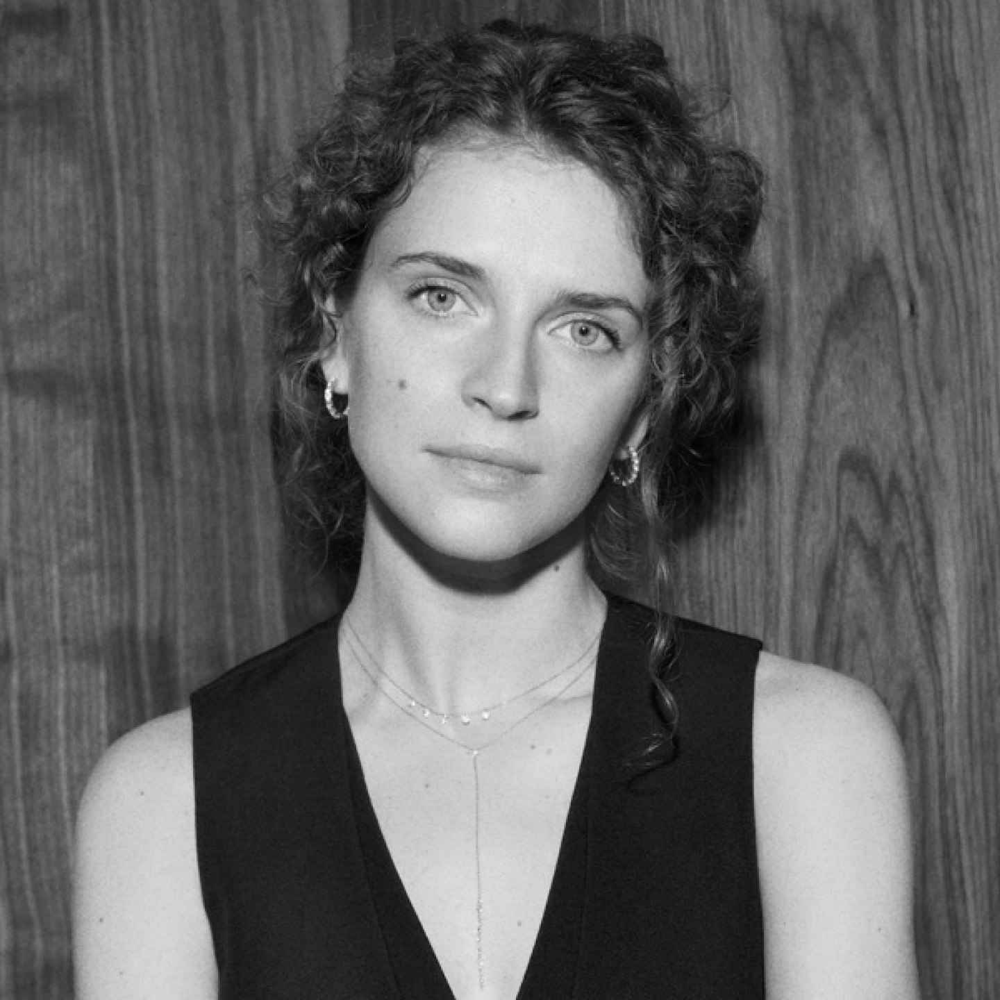
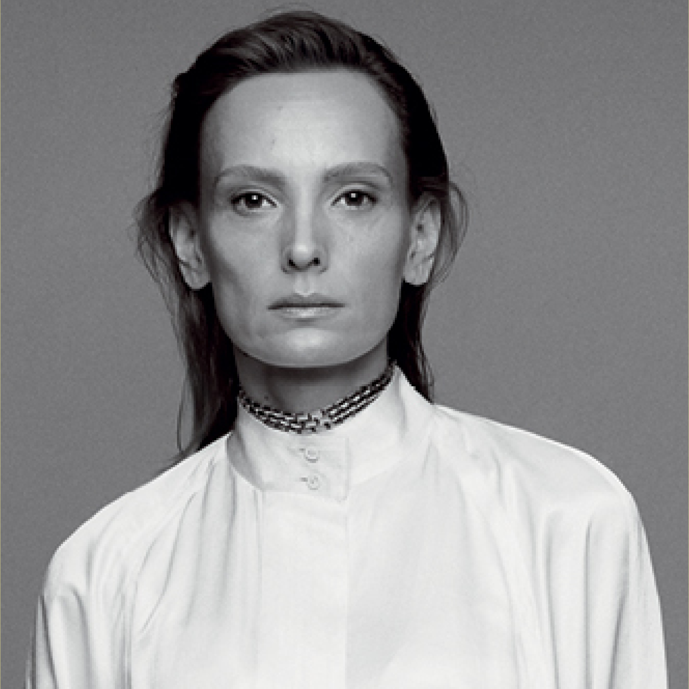
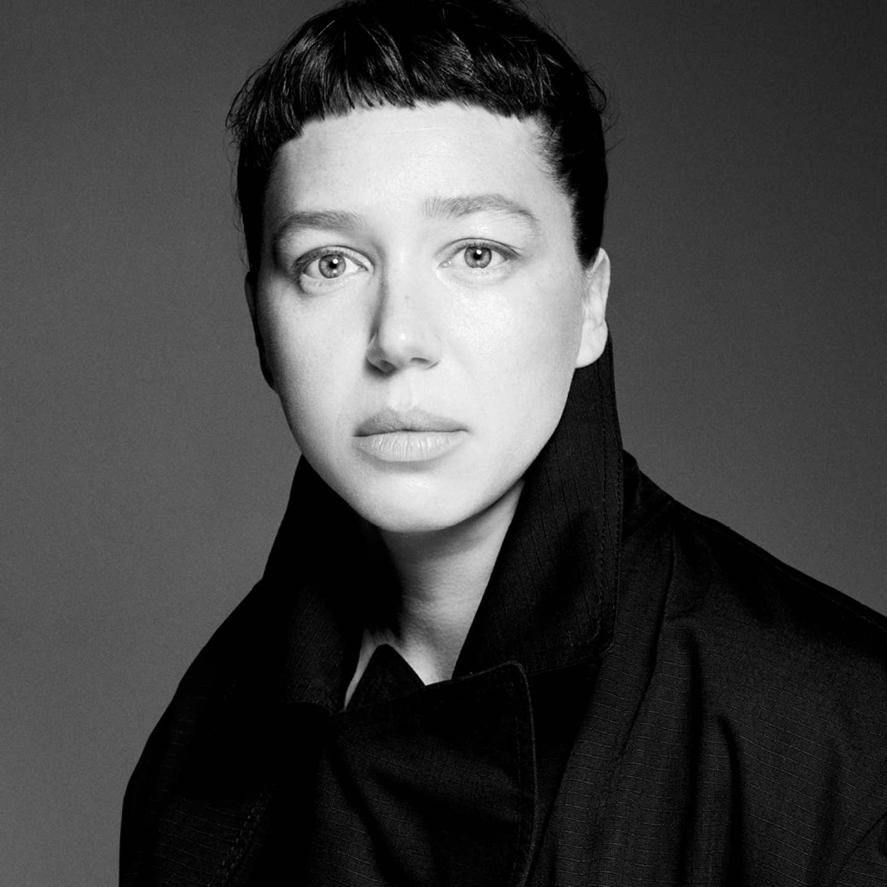

Vogue Ukraine запрошує на другий щорічний захід Vogue Ukraine Leaders Summit, який вшановує видатних професіоналів у галузях моди, мистецтва, культури, спорту, дипломатії, громадського активізму й інновацій. Серед спікерів — визначні українці, які формують сьогодення і плекають майбутнє країни.
Про оптимізм, амбіції та волю до перемоги як рушії успіху – а також ціну, яку за нього доводиться платити, і способи перетворити персональні здобутки на користь для країни йтиметься у виступі найвидатнішої української тенісистки і філантропки Еліни Світоліної.
Як українському митцю побудувати міжнародну карʼєру і бути почутим світом? Про шлях до Netflix, премію BAFTA та міжнародне визнання розповість зірковий актор Олександр Рудинський у розмові з редакторкою відділу культури Vogue UA Дарією Слободяник.
Таланти в часи турбулентності: як креативні індустрії відкривають нові економічні горизонти для України: на запитання паблішерки українського Vogue Юлії Костецької відповість Прем’єр-міністерка України Юлія Свириденко.
Про екологічні, економічні та етичні виклики, з якими стикається модна спільнота, відповідальність великого бізнесу перед майбутнім та власну спробу змінити індустрію дизайнерка та засновниця апсайкл-платформи bettter Юлія Пеліпас розповість головному редактору Vogue Ukraine Вені Брикаліну.
Ведучий Vogue Ukraine Leaders Summit - Олег Панюта.
Під час події буде презентовано друге спеціалізоване друковане видання Vogue Ukraine Leaders.
НАШІ СПІКЕРИ
Еліна Світоліна
Тенісистка, філантропка
Найтитулованіша вітчизняна тенісистка, Еліна Світоліна здобула першу в історії України олімпійську медаль з тенісу — бронзу в Токіо 2021 року. Зараз посідає 13 сходинку у світовому рейтингу, головною професійною метою називає перемогу у одному з турнірів Grand Slam. 2019 року заснувала благодійний фонд Svitolina Foundation, який підтримує молоді спортивні таланти, є амбасадоркою фандрейзингової платформи United24.
Юлія Свириденко
Прем’єр-міністерка України
Економістка Юлія Свириденко з 2021 року обіймала посаду Першої Віцепрем'єрки — Міністерки економіки України. Разом із командою міністерства залучала іноземні інвестиції до країни. Під її керівництвом було запущено низку проєктів з підтримки населення та бізнесу. Юлія Свириденко опікувалася системними реформами економіки задля інтеграції у світові ринки, впроваджувала грантові програми для малого та середнього бізнесу і підтримувала розвиток української легкої промисловості. 17 липня 2025 року Юлія Свириденко була призначена Прем’єр-міністеркою України.
Олександр Рудинський
Актор, Заслужений артист України
Кіно- і театральний актор Олександр Рудинський – один із найяскравіших талантів нового покоління. На сцені рідного Національного драматичного театру ім. Івана Франка він виконує титульні ролі у постановках «Калігула» і «Макбет». Знімається у гучних вітчизняних і закордонних теле- та кінопроєктах. Торік зіграв в американському шпигунському серіалі «Агенція», який спродюсував Джордж Клуні. Цього року за головну роль у короткометражній стрічці «Камінь, ножиці, папір» режисера Франца Бьома отримав найпрестижнішу британську кінонагороду BAFTA.
Колишня fashion-директорка українського Vogue, Юлія Пеліпас 2020 року заснувала апсайкл-платформу bettter. 2022 року отримала нагороду The Fashion Awards від British Fashion Council у категорії "Лідери змін". За рік здобула спеціальну премію Карла Лагерфельда у фіналі конкурсу LVMH Prize та увійшла до списку 100 людей, які змінюють модну індустрію на краще, за версією Vogue Business.
Наталія Ємченко
Директорка зі зв’язків з громадськістю та комунікацій SCM, голова наглядової ради ГО «Серце Азовсталі», членкиня наглядових рад Мariupol.Reborn та Фонду Ріната Ахметова
Реалізує адвокаційні ініціативи на підтримку України на міжнародному рівні, фокусується на розвитку проєктів допомоги ветеранам, відбудови міст, збереження та інституціалізації пам’яті. 2023 року Наталія Ємченко очолила наглядову раду організації «Серце Азовсталі», що забезпечує системну підтримку оборонців Маріуполя та їхніх родин. Також опікується реалізацією проєкту Музей «Голоси Мирних» від Фонду Ріната Ахметова — найбільшого архіву свідчень мирного населення про війну в Україні.
Рита Бурковська
Акторка, військова, керівниця медійного напряму 4-го окремого медичного батальйону
Українська актриса, відома роллю у фільмі «Бачення метелика» Максима Наконечного, світова прем’єра якого відбулася в Каннах 2022 року. Рита зіграла звільнену з російського полону аеророзвідницю, яка долає труднощі нового життя після повернення додому. Під час повномасштабного вторгнення Бурковська стала фіксеркою й допомагала світовим медіа знімати сюжети з фронту. Торік долучилася до лав Збройних Сил України, де нині очолює медіакоманду 4-го окремого медичного батальйону.
Павло Гудімов
Куратор, галерист, музикант
2001 року гітарист гурту «Океан Ельзи» Павло Гудімов заснував у столиці архітектурну майстерню і галерею «Я Дизайн». Сьогодні він знаний артменеджер, керує трьома галереями в Києві та Львові, де проводить групові та персональні виставки українських і світових митців. Є куратором Львівського тижня скульптури, входить до наглядової ради Львівського муніципального мистецького центру, читає лекції, організовує екскурсії та опікується публічною скульптурою в місті. Гудімов – один із найвідоміших колекціонерів країни, у його фондах – тисячі експонатів, від скульптури до живопису та меблів.

Владислав Малащенко
засновник інклюзивної платформи Good Bread і пекарні Good Bread from Good People
Підприємець і громадський активіст, 2017 року Владислав Малащенко заснував пекарню Good Bread from Good People, яка стала першим в Україні соціальним підприємством, що дає можливість дорослим людям з ментальною інвалідністю знайти своє місце в суспільстві. Від 2022 року розвиває платформу Good Bread як ширшу інклюзивну ініціативу з освітніми, волонтерськими та гуманітарними завданнями. Автор проєкту "Безкоштовний хліб для ВПО", у межах якого внутрішньо переміщеним особам передали понад мільйон хлібин, та ініціатор кампанії “Підвішені кекси для психоневрологічних інтернатів України”.

Валерія Гузема
Ювелірка, філантропка
Українська підприємниця, ювелірна дизайнерка Валерія Гузема заснувала власний бренд Guzema Fine Jewelry 2016 року. Сьогодні її прикраси носять перша леді України Олена Зеленська і голлівудські зірки Мілла Йовович і Кім Кетролл. 2021 року Валерія заснувала благодійний фонд, який допомагав дітям, а від початку повномасштабного вторгнення розпочав активну підтримку військових і потерпілих від війни українців.В 2023-му за свою благодійну діяльність Валерія Гузема стала лауреаткою премії Vogue Talent Prize в номінації Resilience and Social Impact.

Вікторія Романова
Очільниця Офісу першої леді, членкиня правління Фундації Олени Зеленської
Колишня заступниця генерального директора з розвитку міжнародного співробітництва НТКУ та екскерівниця напрямку стратегічного планування в департаменті стратегії та розвитку «1+1 медіа», Вікторія Романова 2019 року очолила Офіс першої леді, а згодом стала членкинею правління Фундації Олени Зеленської. Координує флагманські ініціативи Офісу, розвиває ключовий проєкт публічної дипломатії в Україні, що реалізується під егідою Олени Зеленської, – Саміт перших леді та джентльменів.

Катерина Горностай
Режисерка, сценаристка
Дебютний повнометражний фільм Катерини Горностай «Стоп-земля» 2021 року здобув «Кришталевого ведмедя» в конкурсній програмі Generation 14plus на Берлінському кінофестивалі. Цьогоріч нова робота Катерини, документальна картина «Стрічка часу», що зворушливо зображує будні українських школярів у часи повномасштабної війни, стала першим вітчизняним фільмом з 1997 року, що увійшов до основної програми Берлінале.
Олег Панюта
Журналіст, телеведучий
Закінчив Американську школу журналістики у Вашингтоні. За 30-річну журналістську кар’єру працював на провідних телеканалах країни. Зокрема був ведучим інформаційно-аналітичних програм «Новини» НТКУ, “Подробиці тижня” на “Інтері” та “Сьогодні. Підсумки з Олегом Панютою” на каналі “Україна”. Ведучий каналу “Ми - Україна”.
Юлія Костецька
Паблішерка Vogue Ukraine
Медіаекспертка з 20-річним досвідом, випускниця програми «Школа стратегічного архітектора» Києво-Могилянської Бізнес-Школи Юлія Костецька понад три роки є паблішеркою Vogue Ukraine, який очолила у вкрай важкий для країни та медіаіндустрії період. За цей час український Vogue став ініціатором багатьох культурних та соціальних проєктів та попри воєнні випробування продовжує виходити друком.
Веня Брикалін
Головний редактор українського Vogue
Веня Брикалін був призначений головним редактором українського Vogue у травні 2023 року. На цій посаді він розвиває унікальний візуальний стиль видання та посилює позиції бренду на міжнародній сцені. Два роки тому Брикалін увійшов до рейтингу найвпливовіших людей в індустрії BOF 500 за версією ресурсу Business of Fashion.
Альона Пономаренко
Редакторка відділу краси Vogue Ukraine
Журналістка та редакторка з 16-річним досвідом, Альона Пономаренко має магістерську ступінь з права. Вона залишила юридичну кар’єру, щоб писати про красу, ментальне здоров’я та прийняття себе. Курує великі соціальні проєкти українського Vogue та б’юті-додаток. Тексти Альони постійно публікуються в чеському Vogue.
Дарія Слободяник
Редакторка відділу культури Vogue Ukraine
Редакторка та журналістка з 18-річним досвідом роботи в медіа. Матеріали Дарії публікувалися в міжнародних виданнях, зокрема Vanity Fair, British Vogue, Vogue Poland тощо. Лекторка літературної школи Litosvita, де є авторкою курсу «Культурна журналістика», а також SheMedia School, ініційованої UN Women та Стокгольмською школою економіки. Кураторка літературної збірки «Сучасна українська проза та поезія в Vogue Ukraine”.
ПРОГРАМА
13:00 – 14:00
РЕЄСТРАЦІЯ, WELCOME COFFEE.
14:00 – 14:15
ОФІЦІЙНЕ ВІДКРИТТЯ. ПРЕЗЕНТАЦІЯ ДРУКОВАНОГО ВИДАННЯ VOGUE UKRAINE LEADERS.
Ведучий – Олег Панюта.
14:15 – 14:25
ПРО ОПТИМІЗМ, АМБІЦІЇ ТА ВОЛЮ ДО ПЕРЕМОГИ ЯК РУШІЇ УСПІХУ.
Еліна Світоліна.
14:30 – 15:00
ПОЧУТІ ГОЛОСИ: КОМУНІКАТИВНА СИЛА МИСТЕЦТВА ТА РОЛЬ ХУДОЖНИКА В СУЧАСНОМУ СВІТІ.
Панельна дискусія. Учасники – Павло Гудімов, Рита Бурковська, Катерина Горностай. Модераторка – Дарія Слободяник (Vogue Ukraine).
15:00 – 15:30
ЯК УКРАЇНСЬКОМУ АКТОРУ ПОБУДУВАТИ МІЖНАРОДНУ КАРʼЄРУ?
Публічне інтерв'ю з Олександром Рудинським.
15:30 – 16:15
КАВА-БРЕЙК
16:30 – 17:00
ЯК СОЦІАЛЬНІ ІНІЦІАТИВИ БІЗНЕСІВ ЗМІНЮЮТЬ ЖИТТЯ ЛЮДЕЙ.


.jpg)
.jpg)
.jpg)
.jpg)